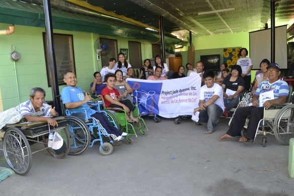
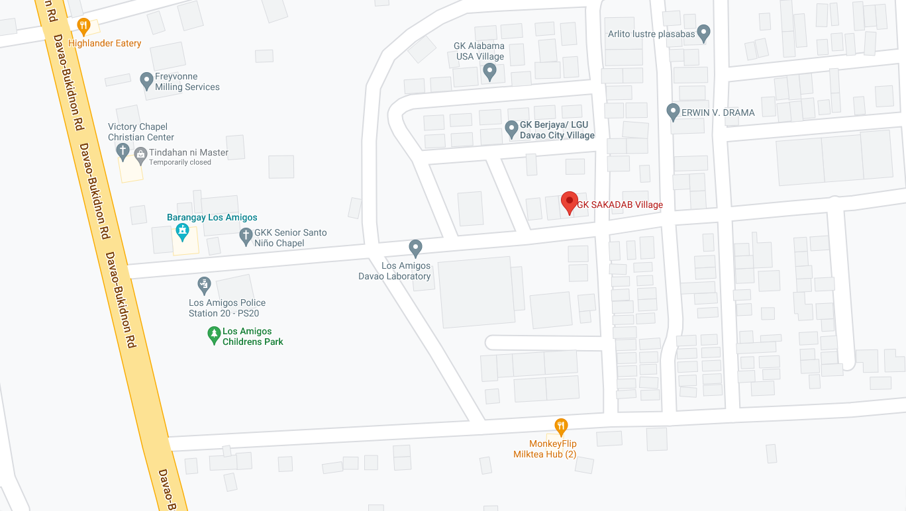
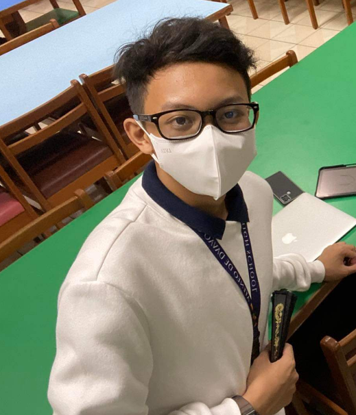

SAKADAB
Homepage

•What is SAKADAB?•
The SAKADAB institution means "Samahan ng may kapansanan sa Dabaw. The SAKADAB community is a community that is mainly based on helping differently-abled individuals. They provide each other spiritual, moral and financial support to live a more meaningful life. Some of the community members engage in farming, woodworking, and welding, creating consumer products such as handicrafts.
•Mission•
Due to the lack of social welfare support for disabled people in the Philippines, SAKADAB', a group of disabled people with acquired skills living in cities, came together with the common goal of improving their quality of life and becoming self-reliant. They provide people with materials to support their skills and other things to use their creativity for wisdom.
•History•
SAKADAB wanted to have a place to live in with our own way of living. With the help of Mayor Inday Sarah Duterte, Mr. Oscar Hidalgo, Gawad Kalinga, and the Lions Club International, they were able to help give land to the SAKADAB. It is a community of differently-abled individuals. There are no specific programs or services which they offer but instead, they provide each other spiritual, moral and financial support to live a more meaningful life.

Address:SAKADAB GK Village, Purok 6-b7, Los Amigos, Davao City, Philippines
Contact Person:Mr. Ludivico Gicain Mascarinas Jr. (aka Kuya Junix)
Contacts:0936 569 5586; 0948 540 9815
